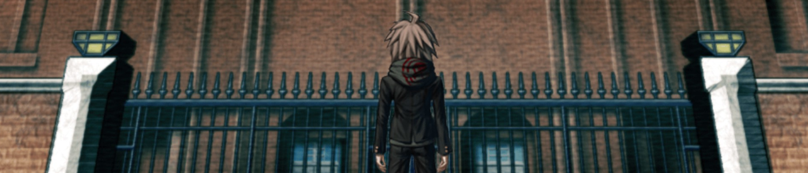
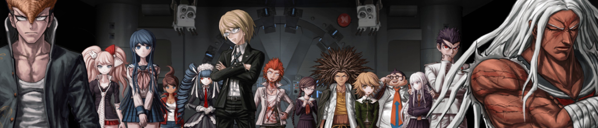
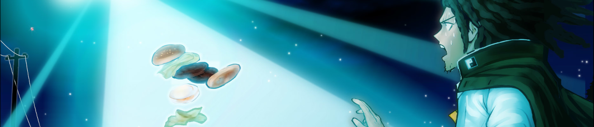
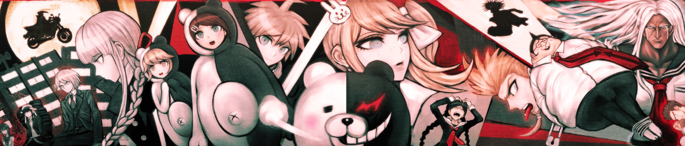

“C’est encore arrivé."
L’annonce venait à peine de se terminer que des regards commençaient déjà à se croiser. Chacun se dévisageait, cherchant un rictus pouvant trahir un éventuel coupable. Des soupçons se portaient aussi sur les absents, qui ont toujours tort, comme le dit l’adage. Des soupçons, ou de la crainte, car une rencontre impromptue est si vite arrivée.
Quant à mon regard, il restait figé sur cette scène macabre. Certes, je ne m’étais pas évanoui cette fois, mais mon état de choc avait besoin de quelques minutes pour se dissiper. Un de nos camarades gisait devant nous, assassiné par l’un d’entre nous ! “C’est encore arrivé”, répétai-je entre mes dents. Malgré mes efforts pour fédérer les autres contre l’instigateur de ce “jeu” mortel, un étudiant avait cédé à la pression et était passé à l’acte. Un profond sentiment de désespoir commençait à m’envahir. Non ! Je ne dois pas y succomber ! C’est ce qu’il recherche, je ne peux pas me permettre de le lui donner !
Je finis par reprendre mes esprits. Les autres ne m’avaient pas attendu pour commencer à s’organiser. Certains examinaient la scène de crime. Un groupe était parti inspecter les autres salles de l’académie, à la recherche des élèves manquants. D’autres encore montaient la garde, guettant les actions suspectes.
Pas de temps pour le deuil. Il y avait un meurtre à résoudre, et il en allait de la survie de nous tous.
Ma détermination retrouvée, je commençais mes investigations.
Il y a de cela un an et demi, j’ai découvert une série mêlant narration, enquête et procès, et ce, avec un enrobage humoristique. Cette série, c’est celle des jeux Ace Attorney (surpris ?), et je l’ai adorée dès le début. J’étais happé par l’univers au point d’enchaîner les six épisodes principaux en quelques mois, même les derniers en anglais. Et il me faut pourtant une bonne motivation pour jouer un jeu principalement textuel en anglais !
Mais on ne va pas parler de Mr Wright cette fois-ci, ce serait un bien trop gros morceau. À la place, on va parler d’un jeu que j’ai découvert le mois dernier, qui reprend un peu les phases de la série de l’avocat (à savoir une enquête où on récolte des indices, puis un procès où on va révéler la vérité à l’aide de ces preuves) tout en arrivant suffisamment à s’en distinguer. Ce jeu, c’est Danganronpa : Trigger Happy Havoc (que l’on va juste appeler Danganronpa pour plus de simplicité), et c’est le sujet de cet article.

L’étrange rentrée de Makoto
Le jeu vous propose d’incarner Makoto Naegi, un lycéen s’apprêtant à faire sa rentrée dans l’Académie du Pic de l’Espoir. Cette institution est la plus réputée du Japon, et les critères de sélection y sont très stricts. Il vous faut exceller dans un secteur, quel qu’il soit, pour pouvoir espérer étudier là-bas. Les élèves y sont d’ailleurs qualifiés d'Ultimes dans leur domaine : l’Ultime Base-Baller, l’Ultime Écrivaine, l’Ultime Idole… Les possibilités sont variées.
Le cas de Makoto est particulier : il n’a pas été sélectionné pour un talent spécifique - il avoue lui-même être moyen en tout - mais suite à un tirage au sort organisé par l’Académie parmi tous les lycéens du pays. Étant l’heureux élu de cette loterie, il a été admis en tant que Chanceux Ultime. Bien qu’un peu intimidé de se retrouver au milieu de ces Ultimes, Makoto se décide à franchir le seuil de sa nouvelle école.
Notre protagoniste se réveille alors dans une salle de classe, assis à une table, seul. Il se souvient être entré dans le hall d’accueil de l’académie, puis plus rien. Plus étrange, les fenêtres et autres issues sont condamnées avec des plaques en métal vissées dessus. En retournant à l’entrée principale, qui est désormais verrouillée par une immense porte blindée, il fait la rencontre des quatorze autres élèves de sa promotion.
Comme dit plus haut, chaque personnage excelle dans une catégorie, que ce soit un sport, une activité intellectuelle ou un art. Parfois, cela peut être lié à une qualité plus qu’à un talent : on a déjà parlé du Chanceux Ultime, mais on rencontre aussi l’Héritier Ultime (né dans l’une des familles les plus influentes au monde) et la Boussole Morale Ultime (reconnu pour sa droiture dans toutes les circonstances). Cette diversité s’accompagne d’une variété de personnalités, parfois un peu clichées, il faut l’admettre. Si Tôko, l’Ultime Écrivaine qui nous apparaît initialement timide et assez cassante, voit son caractère se complexifier au fil de l’histoire, ce n’est pas le cas d’Hifumi, l’Auteur de Doujins Ultime, qui restera un otaku tout le long de l’aventure. Il faut avouer qu’il n’est pas facile de développer quinze personnages différents, surtout si certains viennent à disparaître au début de l’aventure.
Une fois les présentations terminées, une voix invite le groupe à se rendre au gymnase pour la cérémonie d’admission des nouveaux arrivants, organisée par le directeur. Mais sur place, c’est un ours en peluche robotique qui les accueille. Il se présente : son nom est Monokuma, il est l’actuel directeur de l’Académie du Pic de l’Espoir, et son rôle est de leur apprendre le désespoir. Dans ce but, il a verrouillé tous les accès du bâtiment, contraignant les membres de notre promotion à vivre le reste de leurs jours entre ces murs, isolés du monde extérieur. Il existe cependant un moyen de sortir, nous dit Monokuma, et c’est à condition de tuer un autre élève sans se faire démasquer. C’est alors que commence un jeu macabre, organisé par ce mystérieux instigateur. Malgré les efforts de la plupart des étudiants pour s’unir contre lui, il arrivera tout de même à faire pression sur certains grâce à des menaces, les forçant à passer à l’acte.
On ne va pas se mentir, le schéma narratif des adolescents contraints à s’entre-tuer a déjà été vu ailleurs (Battle Royale ou Hunger Games, pour ne citer qu’eux). Danganronpa ajoute à cela une dimension enquête, car à chaque assassinat, il faudra identifier le criminel et argumenter auprès des autres sur sa culpabilité. Les mystères en fil rouge sont aussi une bonne motivation pour continuer : qu’est-il arrivé à l’académie ? Qui est l’instigateur qui contrôle Monokuma ? Que se passe-t-il pendant ce temps à l’extérieur ?

Votre emploi du temps à l’Académie
Une fois ce prologue terminé, le jeu se découpe en six chapitres respectant l’enchaînement suivant :
La vie commune
Cette phase, se déroulant sur plusieurs jours, met en scène la vie des étudiants dans cette académie qui leur sert de prison. Pas de cours à suivre cependant, aucun professeur n’est présent pour en donner, ce qui leur laisse beaucoup de temps libre. Il sera investi dans l’exploration de l’institut et la recherche d’indices pour tirer la situation au clair. On aura aussi des interventions de Monokuma qui, s’ennuyant de ne pas voir plus d’action, tentera plusieurs ruses pour pousser les jeunes gens à l’acte. Ce sera souvent un élément déclencheur, et les jours qui suivront laisseront parfois transparaître les prémices de la prochaine affaire.
L’exploration de l’académie se fera en partie en vue subjective dans des environnements modélisés en 3D. Les salles, cependant, ont un angle de vue plus fixe, même s’il est possible de le bouger un peu. On pourra examiner l’environnement de ces pièces à la recherche d’informations.
Une autre activité que vous pouvez faire pendant votre temps libre est de discuter avec un autre élève. Vous pouvez même lui offrir un cadeau obtenu à la boutique de l’école. Cela vous permettra de vous rapprocher de lui, mais surtout de débloquer des dialogues spéciaux permettant d'en apprendre plus sur sa personnalité. Ces dialogues se termineront par le gain d’une compétence ou de points de compétence, qui vous seront utiles pour les phases de procès.

L’enquête
La quiétude ne dure néanmoins qu’un temps, et est toujours interrompue par une sombre nouvelle : un corps sans vie a été retrouvé, et il faut enquêter pour découvrir l’assassin. À partir de ce moment, Monokuma nous accorde quelques heures pour enquêter sur le meurtre avant le procès. Dans les faits, le temps n’est pas limité, et on ne passe à la phase suivante qu’après avoir trouvé tous les indices. Ceux-ci sont à dénicher en examinant l’environnement, notamment la scène du crime, et en discutant avec les autres. La navigation et les interactions sont similaires à celles de la vie commune. On notera aussi la possibilité de réagir à certaines expressions prononcées par nos interlocuteurs pour les détailler.
En général, l’enquête n’est pas bien compliquée : on arrive souvent à la fin de la phase avec une bonne idée de ce qui s’est passé. Cela peut gâcher certains twists, je pense entre autres à celui du chapitre 2 qui met en scène pendant le procès la révélation d’une information capitale… qu’on avait déjà déduite pendant l’enquête. C’est pourtant nécessaire, car la plupart des actions pendant le procès sont à temps limité, ce qui restreint la période de réflexion. Certains éléments, comme l’identité du meurtrier, resteront cependant à éclaircir pendant la troisième phase.
Le procès
Au terme de l’enquête, les étudiants sont convoqués au tribunal de l’école. Ils y seront à la fois suspects, accusateurs, défendeurs et jury. Monokuma s’occupe de la partie exécution : si le coupable est correctement identifié, seul lui sera “puni”. Dans le cas contraire, il sera diplômé, et ce seront ses camarades qui recevront la sanction.
La phase de procès est la pièce de résistance de chaque chapitre : plus dynamique, c’est aussi celle disposant du gameplay le plus riche. Vous disposez d’une barre de vie que vous gardez tout au long de la séance. Elle se vide à chacune de vos erreurs, et se remplit lorsque vous répondez correctement aux questions posées. Chaque phase de mini-jeu a une limite de temps, et si vous venez à en manquer, ou à enchaîner les erreurs, le procès se termine sur une accusation erronée. Rien de punitif dans les faits, car vous pouvez reprendre juste avant votre dernier échec avec toute votre vie.
Pendant le procès, vous alternerez les dialogues et les questions avec des activités :
- Le Débat non-stop : C’est la partie emblématique de Danganronpa : les élèves parlent les uns à la suite des autres, leur dialogue défiant automatiquement. Certains termes dans leurs déclarations apparaissent en surbrillance : ce sont des points faibles. Vous disposez de “balles de vérités”, des preuves chargées dans une arme métaphorique. Il vous faudra trouver le bon point faible, sélectionner la preuve permettant de contrer l’argument dans votre barillet et de tirer dessus. Si vous faites mouche, l’échange se termine et l’intrigue peut continuer. Les débats s’étofferont de nouvelles mécaniques au fur et à mesure de l’avancement dans le jeu (par exemple, le bruit ambiant peut vous empêcher de toucher des points faibles).
- La Contre-attaque balistique : Un face-à-face avec un autre élève où vous devrez détruire ses attaques verbales en rythme. Faites attention à recharger entre deux rafales, sinon vous risquez d’être submergés. Là encore, le gameplay se complexifiera en fonction de la progression.
- Les Anagrammes : Un mini-jeu où il faudra retrouver un mot à partir de lettres qui défilent. Ce n’est pas la phase la plus intéressante.
- Le Récapitulatif des faits : Vers la fin du procès, au moment où vous vous apprêtez à démasquer le coupable, il vous sera demandé de faire un résumé de l’affaire. Placez correctement sur une bande dessinée les événements du meurtre, et vous serez apte à prouver la culpabilité de votre suspect.
S’ensuit le vote pour le coupable, la validation du résultat par Monokuma (il connaît l’identité du meurtrier, il a des caméras de surveillance dans toutes les salles de l’académie) et l’application de la sentence : l’exécution. Elle dispose à chaque fois d’une mise en scène par rapport à la personnalité du condamné, et tout le monde est obligé d’y participer.
Et ensuite ?
Après ça, les survivants sont invités à retourner à leurs dortoirs et à reprendre leur vie commune. Cela n’est pas facile pour tout le monde : la confiance mutuelle est fragilisée, et certains font le deuil d’amis récemment disparus. C’est aussi l’occasion pour voir des développements de personnages s’opérer suite à des révélations faites lors du dernier procès.
Monokuma s’est aussi engagé à ouvrir un nouvel étage de l’académie après chaque meurtre résolu. C’est l’occasion d’explorer des lieux inédits et de découvrir des nouvelles informations sur le fil rouge de l’histoire. Dans la plupart des cas, ces zones seront aussi le théâtre du prochain meurtre.
Autre chose à ajouter ?
J’aimerais revenir un peu plus en détail sur la partie esthétique du titre : pour la caractériser simplement, il s’agit d’un visual novel avec des décors en 3D. Le titre va tout de même plus loin qu’une succession de boîtes de dialogue qui défilent. Comme dit plus haut, la navigation dans l’académie se fait en vue subjective, et les personnages sont des sprites placés dans le décor. Ces derniers, même s’ils ne disposent pas d’animations, sont assez variés et expressifs pour illustrer leurs dialogues. Le tout reste suffisant pour nous garder immergés dans l’histoire. Le seul bémol que je peux reprocher aux visuels, ce sont les images présentées lors du récapitulatif de l’affaire, qui ne sont pas aussi travaillées que les autres.
Le jeu dispose aussi d’un doublage japonais et anglais, complet sur les procès, partiel le reste du temps.
Une fois l’aventure principale terminée, vous débloquerez un jeu bonus qui s’apparente à un jeu de gestion. Dans une version alternative du début du jeu, Monokuma demande au groupe d’étudiants de fabriquer des copies de lui-même, au cas où il viendrait à être détruit. Il vous faudra organiser les journées des élèves entre la collecte de ressources pour construire les répliques, le nettoyage des dortoirs et le repos. Vous avez un nombre de jours limités pour construire les Monokumas de rechange, et en cas de non-respect des délais, c’est la fin de votre partie. J’avoue ne pas avoir accroché à la proposition (je me suis arrêté assez tôt), le seul intérêt que j’ai perçu est la possibilité de continuer à discuter avec les autres élèves pour finir de débloquer leurs dialogues spéciaux.
Enfin, un mot sur la partie technique : elle reprend la base simple de la majorité des visual novels tout en ajoutant des fonctionnalités et des phases de jeu. Cette simplicité n’est pas un problème, tant qu’elle sert correctement la narration, et elle fait ici ce qu’il faut pour la soutenir.
Conclusion
Danganronpa fut un chouette titre à parcourir. Il n’est peut-être pas l’Ultime Jeu d’Enquête, mais j’ai aimé découvrir son intrigue et ses personnages hauts en couleur. Les cas sont suffisamment différents pour renouveler l’intérêt bien que le déroulement des chapitres suive toujours le même schéma. Ce sont les phases de procès qui m’ont le plus marqué, grâce à leur dynamisme et leur richesse de jeu. J’aurais cependant aimé être un peu plus surpris par certaines révélations.
